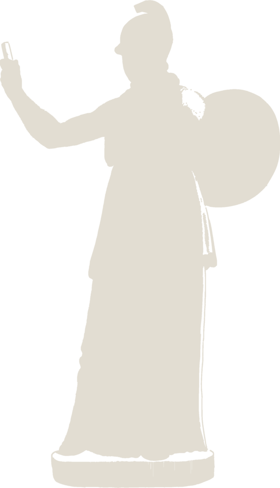
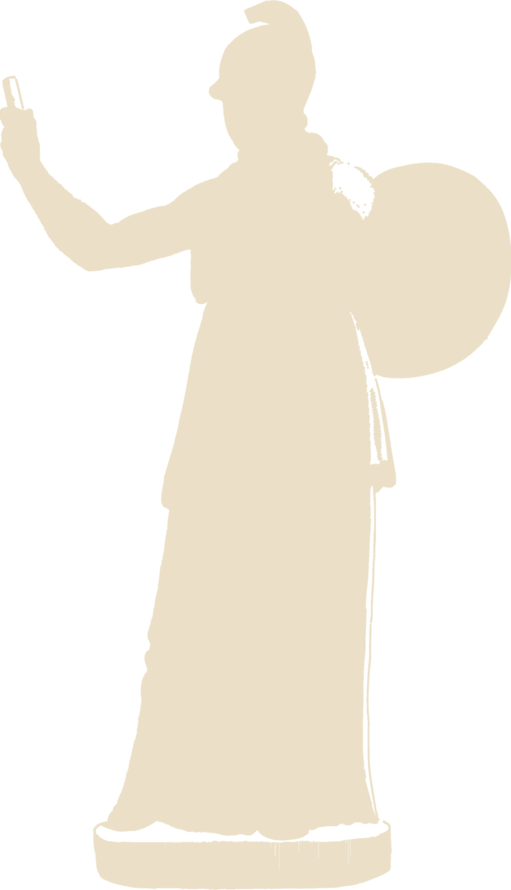
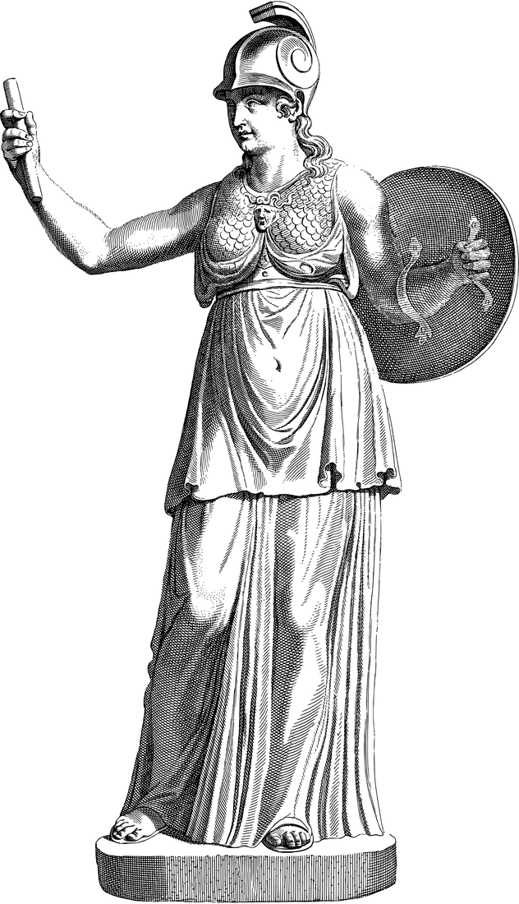

La recherche
Débat, remémoration active, pratique espacée, raisonnement explicite : chaque choix de L’Étude suit les résultats les plus robustes de la recherche en apprentissage — jusqu’à la structure des séances, 90 minutes deux fois par semaine, identique au protocole de Sartania et al. (2022).
Résultats clés
Les mécanismes
Le débat plutôt que le cours
L’actif bat le passif — et l’effet est renforcé en petits groupes avancés.
L’actualité à chaud
Une proposition en direct, sans exposé préalable — puis un débrief qui nomme chaque opération.
La remémoration
Produire de mémoire avant de recevoir : l’effet test de Roediger & Karpicke.
L’espacement
Deux rencontres séparées ; la seconde force rappel, opposition, transfert.
L’entrelacement structuré
Des contrastes raisonnés — politique, éthique, rhétorique — jamais de zapping.
L’explicite
Nommer les opérations : définition déplacée, prémisse causale manquante, version forte ignorée.
La règle d’or
« Raisonner d’abord, vérifier quand la vérification compte. »
Sources scientifiques
Afficher les 23 sources
- Roediger, H. L., & Karpicke, J. D. (2006). Test-Enhanced Learning. Psychological Science, 17(3).
- Roediger, H. L., & Karpicke, J. D. (2006). The Power of Testing Memory. Perspectives on Psychological Science, 1(3).
- Cepeda, N. J., Pashler, H., Vul, E., Wixted, J. T., & Rohrer, D. (2006). Distributed practice in verbal recall tasks. Psychological Bulletin, 132(3).
- Freeman, S., et al. (2014). Active learning increases student performance in science, engineering, and mathematics. PNAS, 111(23).
- Crouch, C. H., & Mazur, E. (2001). Peer Instruction: Ten years of experience and results. American Journal of Physics, 69(9).
- Abrami, P. C., et al. (2015). Strategies for Teaching Students to Think Critically: A Meta-Analysis. Review of Educational Research, 85(2).
- Kozanitis, A., & Nenciovici, L. (2023). Active learning versus traditional lecturing in humanities and social sciences: a meta-analysis. Higher Education, 86.
- Tao, Y., & Griffith, E. (2020). Critical Thinking Skills Training through Live Debates on Current Political Issues. PS: Political Science & Politics, 53(1).
- Chen, X., Wang, L., Zhai, X., & Li, Y. (2022). Argument Map-Supported Online Group Debate and Critical Thinking. Frontiers in Psychology, 13.
- Schueler, B. E., & Larned, K. E. (2025). Interscholastic Policy Debate Promotes Critical Thinking and College-Going. Educational Evaluation and Policy Analysis, 47(1).
- Krakowski, K., Clemm von Hohenberg, B., & Morisi, D. (2026). Does School Debating Reduce Vulnerability to Misinformation? The Journal of Politics, 88(3).
- Carvalho, P. F., & Goldstone, R. L. (2014). Effects of interleaved and blocked study. Frontiers in Psychology, 5.
- Wilson, K., & Korn, J. H. (2007). Attention during Lectures: Beyond Ten Minutes. Teaching of Psychology, 34(2).
- Bradbury, N. A. (2016). Attention span during lectures: 8 seconds, 10 minutes, or more? Advances in Physiology Education, 40(4).
- Folkard, S., & Monk, T. H. (1980). Circadian rhythms in human memory. British Journal of Psychology, 71(2).
- van der Heijden, K. B., et al. (2010). Time-of-day effects on cognition in preadolescents.
- Digdon, N., & Howell, K. (2008). Morningness, alertness and time of day.
- Bingham et al. (2022). Tracking student engagement with modalities of student–instructor contact.
- Mecheric et al. (2025). Active learning in two biology courses: a three-point perspective.
- Sartania et al. (2022). Increasing Collaborative Discussion in Case-Based Learning.
- Delavande, Del Bono, Holford & Williams (2026). Timetables, Attendance and Academic Achievement.
- Explaining undergraduate perceptions of course workload using LMS records (2023).
- Thompson, Yoon & Booth (2023). Dispersed assessment and student engagement.